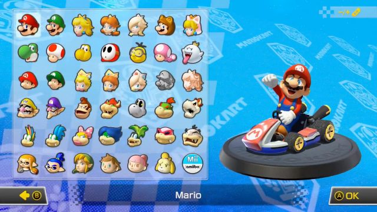

There are 41 characters in Mario Kart 8 deluxe
Every character in the game comes under 1 of 5 different weight types:
The following are the statistics and weight classes for each character. (Shown in the order: Speed land/water/air/AG|Handling land/water/air/AG|acceleration|weight|traction|mini turbo|total)
Baby Peach and Baby Daisy:
2.25/2.5/2.75/2|5/4.5/5/5|4|2|4.25|4|43.25|
Baby Rosalina and Lenny:
2.25/2.5/2.75/2|4.75/4.25/4.75/4.75|4.25|2|3.75|4|42|
Baby Mario, Baby Luigi, Dry Bones and short Mii:
2.5/2.75/3/2.25|4.5/4/4.5/4.5|4.25|2.25|4.5|3.75|42.75|
Koopa Troopa, Lakitu and Bowser Jr:
2.75/3/3.25/2.5|4.5/4/4.5/4.5|4|2.5|4.25|3.75|43.5|
Toadette, Wendy and Isabelle:
2.75/3/3.25/2.5|4.25/3.75/4.25/4.25|4.25|2.5|3.5|3.75|42|
Toad, Shy Guy and Larry:
3/3.25/3.5/2.75|4.25/3.75/4.25/4.25|4|2.75|4|3.5|43.25|
Cat Peach, Inkling Girl and Villager (F):
3.25/3.5/3.75/3|4/3.5/4/4|4|2.75|3.75|3.5|43|